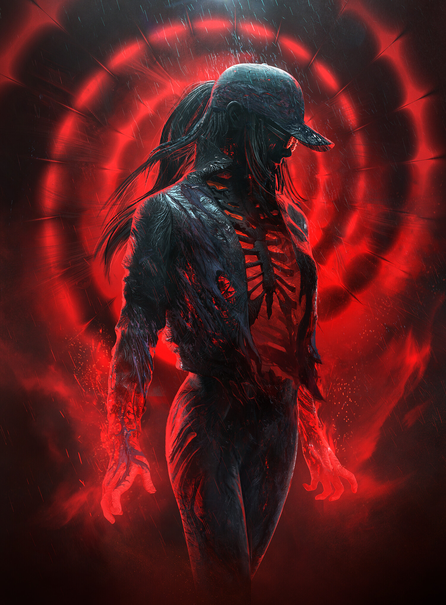
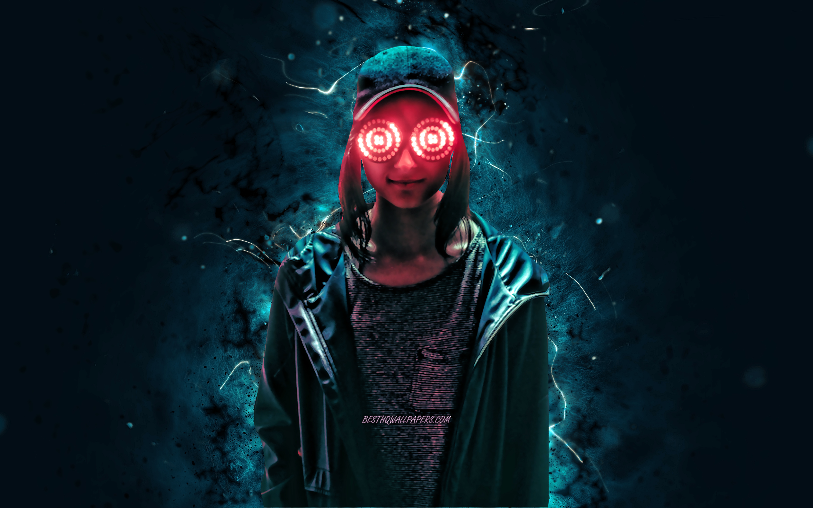

Al haber aprendido posicionar elementos en CSS, se ha facilitado todo


SPIRAL
Tour 2022
En siete simples palabras, REZZ encapsuló perfectamente la impresionante escenografía de su próxima gira "Spiral": "la cosa más REZZ que jamás hayas visto".
En un breve vídeo compartido en Twitter esta semana, REZZ se dirige a sus fans y afirma que la producción de su próxima gira es "la definición perfecta de su marca hasta ahora".
Luego sigue con una breve muestra de su asombroso escenario, ambientado con los sonidos de su último single, el bonus track de Spiral "MENACE".
Durante su próxima gira, los asistentes podrán disfrutar de sus éxitos en un escenario realzado por un conjunto de luces en espiral que la rodean en el centro del escenario.
Junto con una gran pantalla LED con su imagen característica, el arsenal audiovisual de REZZ parece ser el más impresionante hasta ahora y un complemento perfecto para nuevos lanzamientos como "Chemical Bond" y "Vortex".
La gira "Spiral" de REZZ comienza el 18 de febrero de 2022 en Detroit, Michigan, y concluirá en Vancouver, Canadá, el 20 de mayo.